Cadejo Playa
El Sunzal, Surf City, km 45 y medio
Sobre los riscos de El Sunzal, con una piscina de agua salada que se llena con el mar y otra de agua dulce. Quedate la noche: habitaciones desde $125.
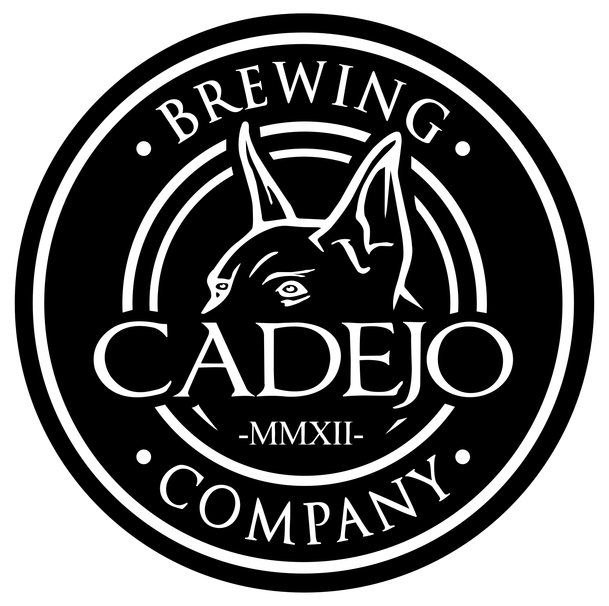
Las experiencias que buscás están en Cadejo
Cadejo nació como la primera cervecería artesanal de El Salvador. Hoy cada sucursal está pensada para un momento distinto: vos elegís el plan y nosotros tenemos el lugar.
Tres preguntas rápidas y te mostramos los tres Cadejos que más te van, con cómo llegar.
Todos los Cadejos tienen comida, nuestra cerveza artesanal y bebidas sin alcohol, y en todos las familias son bienvenidas.
Vale la pena el viaje. Planeá el día alrededor de ellos.
El Sunzal, Surf City, km 45 y medio
Sobre los riscos de El Sunzal, con una piscina de agua salada que se llena con el mar y otra de agua dulce. Quedate la noche: habitaciones desde $125.
Santa Tecla
Nuestro restaurante destino en la Mansión de las Colinas, una mansión histórica restaurada. Parada obligada si visitás El Salvador, con desayunos de fin de semana desde las 7 a.m.
Calle a Huizúcar, Nuevo Cuscatlán
Nuestro único steakhouse: carnes al carbón y a la leña, con vista a volcanes y lagos, a 5 minutos de la ciudad.
La fábrica, San Benito, San Salvador
Donde se hace la cerveza Cadejo. Comé junto a los tanques, probá todos los estilos de barril y unite al tour de la fábrica todos los jueves a las 7 p.m.
Frente a las Puertas 2 y 9, todos los días desde las 5 a.m.
Dos restaurantes dentro del Aeropuerto Internacional de El Salvador, con desayuno, almuerzo, cena y tu última cerveza artesanal salvadoreña antes de volar.
Zona Viva, Zona 10, Ciudad de Guatemala
El punto de la cerveza artesanal en el corazón de la Zona Viva. Jardín al aire libre y terrazas, ambiente relajado, y tu chucho es bienvenido.
Buena comida, nuestra cerveza de barril y algo pasando casi todas las noches.
Plaza Jabes, frente a PriceSmart
Vení con tu jauría: el partido en nuestras mejores pantallas, ajedrez, juegos de mesa y trivia, con vista al volcán de San Salvador.
Paseo Venecia, Soyapango
Una amplia terraza para familias y amigos. Desayunos de fin de semana desde las 7 a.m., karaoke y tributos musicales, con nuestras cervezas y sodas artesanales.
Pasares, San Juan Opico
Algo diferente en la zona: karaoke, toques musicales y el partido con nuestras cervezas y sodas artesanales, abierto los siete días.
Cada Cadejo tiene su propia cocina y su propio menú, desde mariscos frente al mar hasta desayunos de fin de semana en la montaña.
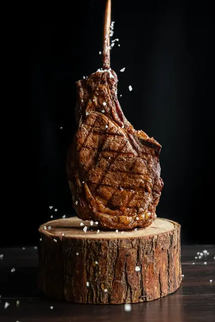


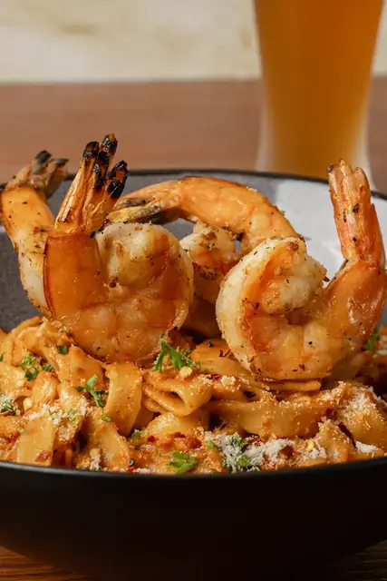
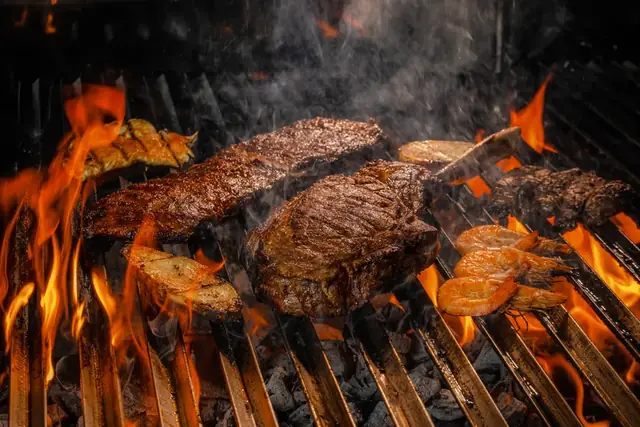


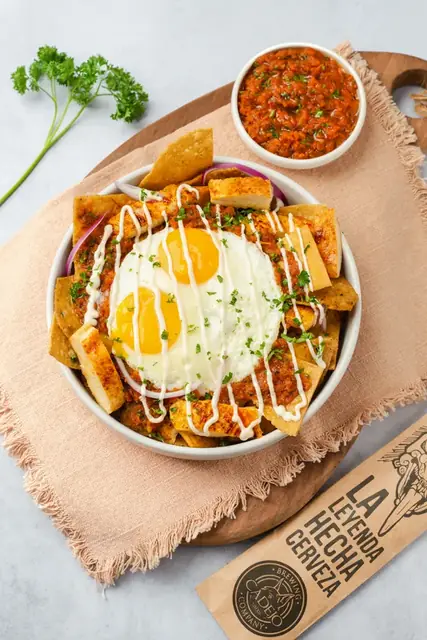
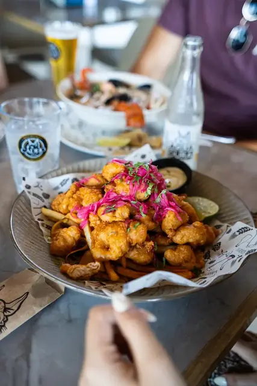
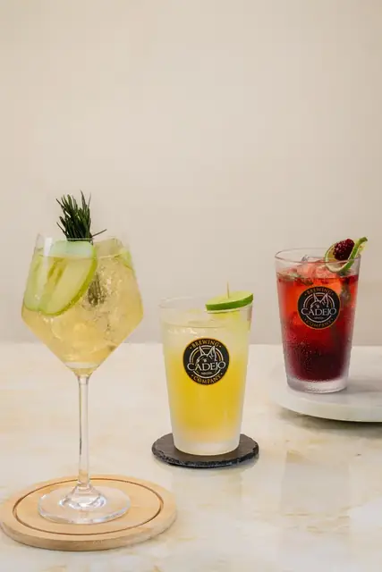

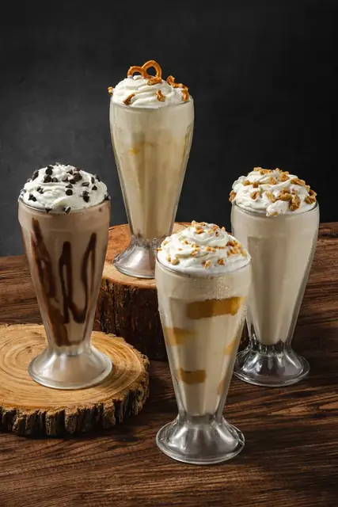
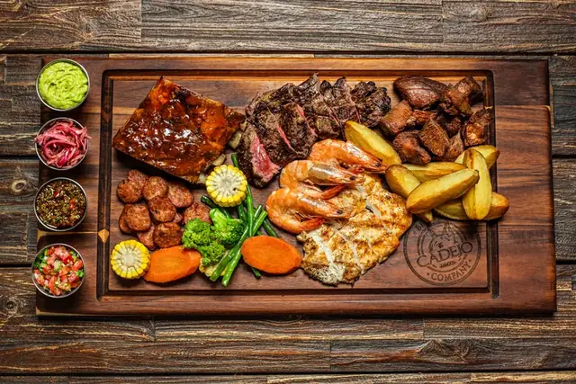

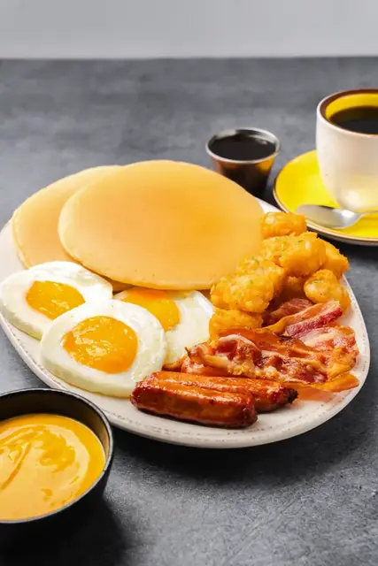

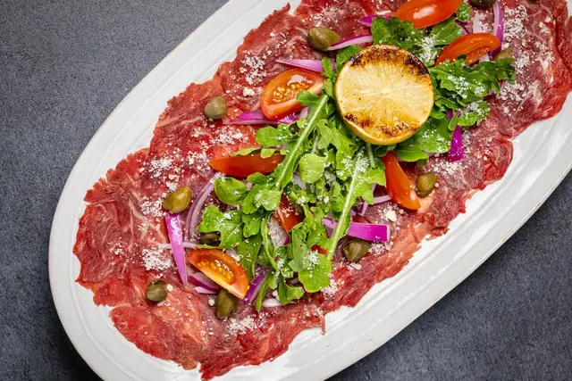
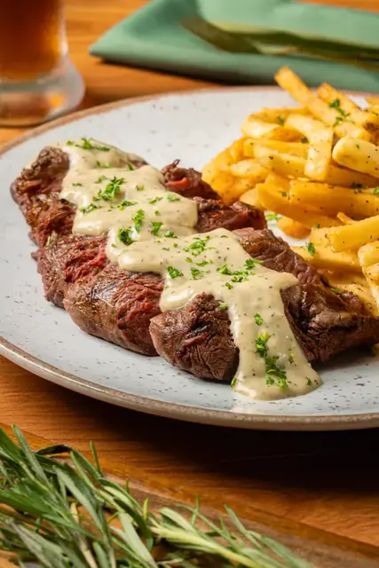

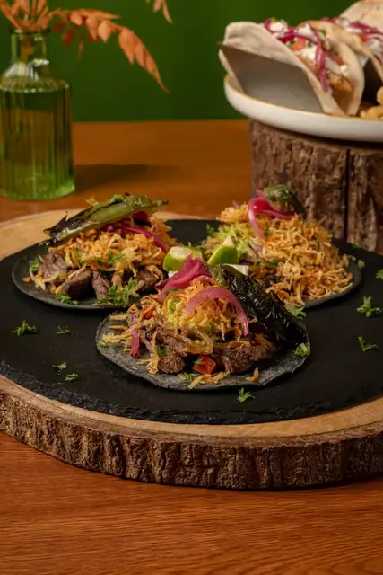

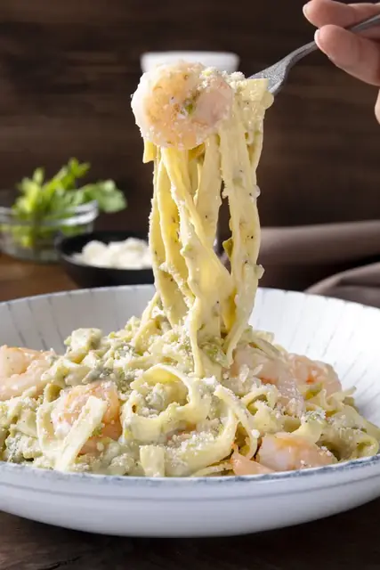
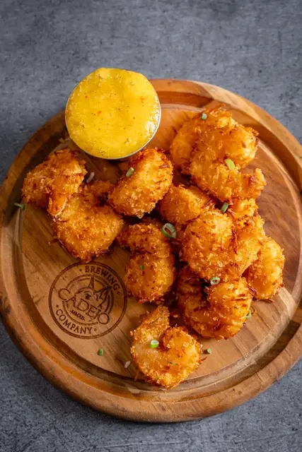
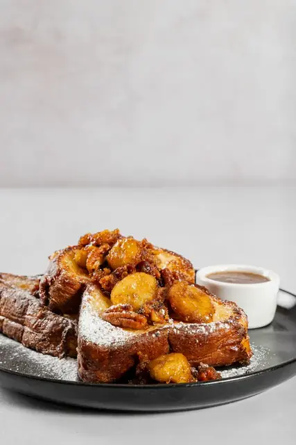
Cada sucursal tiene su propio menú. Ver los menús por sucursal
Cadejo es la cervecería artesanal más grande de Centroamérica, y todo empezó en 2012 como la primera de El Salvador. Cada cerveza se hace en nuestra fábrica de Zona Rosa. Deslizá para ver las de la casa y preguntá por las de temporada.
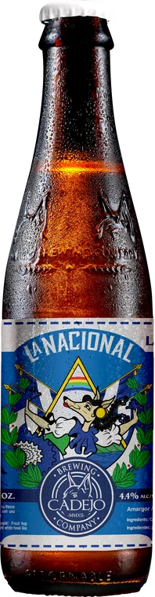
Lager artesanal
Esta es una cerveza de estilo Lager, suave en amargor, ideal para vos que estás iniciando en el mundo de la cerveza artesanal. Hecha con lúpulos Hallertauer Blanc, maltas Pilsen, Munich y Viena.
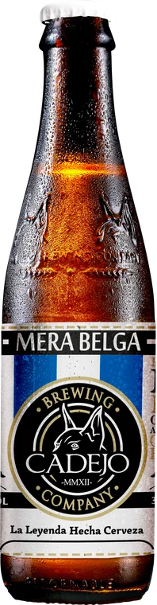
Belgian white ale
Estilo ligero y refrescante que se origina en los monasterios de Bélgica hace cientos de años. Suave sabor frutal característico de las levaduras belgas.
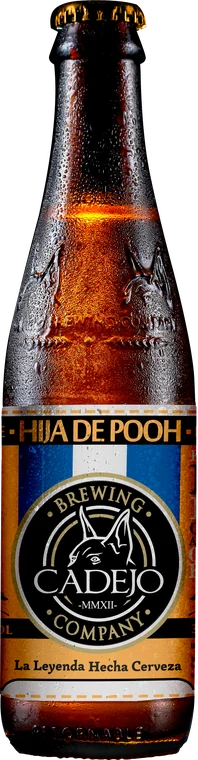
Honey blonde ale
Una cerveza única, con sabores suaves de maltas claras y aroma floral. Un estilo con color dorado profundo y final seco que aporta el uso de miel en la cerveza.
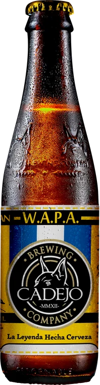
Wheat American pale ale
Característica por el amargo cítrico de lúpulos americanos y definida suavidad del trigo. Un estilo clásico del renacimiento de la cerveza en las Américas.
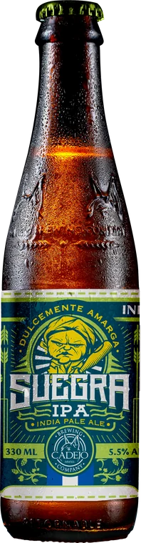
India pale ale
Estilo India Pale Ale que se caracteriza por su intenso sabor y aroma frutal proveniente de la combinación de diferentes tipos de lúpulo.
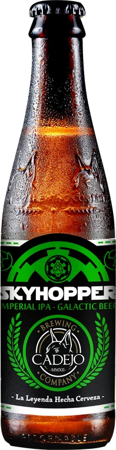
Imperial IPA
Un estilo creado para resaltar los poderes de la fuerza interna del lúpulo. Una cerveza digna de realeza y favorita de todo el imperio galáctico.
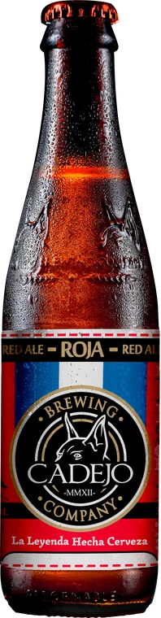
Red ale
Aromática, con buen balance entre el amargo del lúpulo y la suave dulzura de las maltas caramelizadas. Una de las favoritas de nuestros fans.
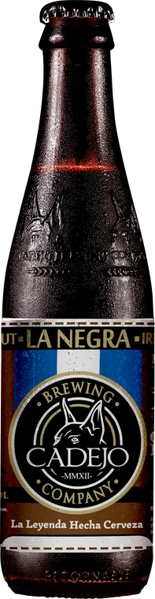
Irish stout
El estilo clásico irlandés. Elaborada con una combinación de 7 tipos de malta que aporta notas de café y chocolate oscuro.
Belgian tripel
Fuerte contenido de alcohol. Tonos suaves a caramelo y "toffee". Bajo en lúpulo y cuerpo liviano, por lo que es muy fácil de tomar.
Pumpkin ale
Cerveza de sabor dulce que recuerda a un pastel de calabaza.
Cerveza de temporada
Birria con sabor a jengibre y bastante sensación a malta, tonos oscuros y dorados dando una combinación visual atractiva, siendo la birria característica para las fiestas.
Cuentan los abuelos que los Dioses crearon dos criaturas para proteger a los pueblos. Uno blanco como la espuma, guardián de la luz, cuida a los que hacen el bien. Otro negro como el carbón, merodeador de las sombras, asusta a las almas descarriadas para enderezar sus vidas. Dos guardianes, la dualidad que llevamos dentro.
Leé la leyenda y nuestra historiaCumpleaños, baby showers, graduaciones, bodas y eventos de empresa. Reservá un salón privado en sucursales seleccionadas, o llevá la barra Cadejo y un Cadejo Sommelier a tu evento.
Cotizá tu evento por WhatsApp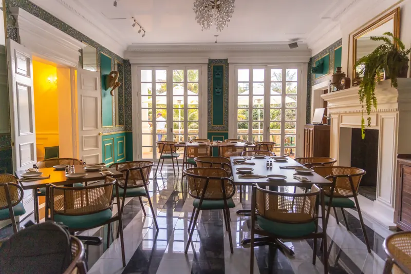
Las dos cosas. Cadejo nació en 2012 como la primera cervecería artesanal de El Salvador y hoy es la cervecería artesanal más grande de Centroamérica. Cada sucursal es también un restaurante con su propia cocina, desde un restaurante de playa en El Sunzal hasta un steakhouse con vista y una mansión histórica en Santa Tecla.
Sí, comida completa en todas las sucursales. Hay mariscos en Cadejo Playa, carnes al carbón y a la leña en nuestro steakhouse Cadejo Montaña, hamburguesas, bowls, pastas, tacos, ensaladas y postres, además de desayunos, menú infantil y menú vegetariano en Cadejo Mansión. Cada sucursal tiene su propio menú.
Sí. Todas las sucursales de Cadejo tienen ambiente familiar y los niños son bienvenidos. Las familias disfrutan Montaña, Mansión y Playa para desayunos de fin de semana y almuerzos largos, y Soyapango para desayunos y celebraciones.
Empezá por Cadejo Mansión en Santa Tecla, una mansión histórica restaurada y parada obligada. ¿Vas a Surf City? Cadejo Playa en El Sunzal tiene piscinas sobre el risco y habitaciones frente a la playa. ¿Te gusta la cerveza? Visitá nuestra fábrica en Zona Rosa, San Salvador, para el tour de los jueves. Y antes de volar, tenemos dos restaurantes en el aeropuerto.
Los sábados y domingos, Cadejo Mansión, Cadejo Montaña y Cadejo Soyapango abren a las 7 a.m. y Cadejo Playa a las 9 a.m. Nuestros dos restaurantes del aeropuerto sirven desayuno todos los días desde las 5 a.m.
Sí. Toda nuestra cerveza se hace en nuestra propia fábrica en Zona Rosa, San Salvador. Cadejo es la cervecería artesanal más grande de Centroamérica, con cervezas de la casa como WAPA, Roja, La Negra, Merabelga, Suegra, Hija de Pooh, La Nacional y Skyhopper, además de birrias de temporada.
Sí. Hay tour cervecero todos los jueves a las 7 p.m. en Cadejo Zona Rosa, Calle La Reforma #222, San Benito, San Salvador.
Para usar las piscinas de agua de mar y de agua dulce hay un consumo mínimo de $25 por persona, y todo se consume en comida y bebida. ¿Venís solo a comer? No hay mínimo. También te podés quedar la noche: las habitaciones son desde $125.
Cadejo Santa Elena es la que tiene más pantallas, además de noches de juegos, trivia y ajedrez. Zona Rosa, Soyapango y Opico también pasan los partidos importantes.
Sí. Hacemos cumpleaños, bodas, fiestas empresariales, pedidas de mano, baby showers y más. Cadejo Mansión y Cadejo Montaña son nuestros favoritos para eventos grandes, y también podemos llevar la barra Cadejo y un Cadejo Sommelier a tu propio lugar.
Sí, en Cadejo Montaña y Cadejo Guatemala. En Montaña tu perro tiene su pana de agua y premios, y en Guatemala hay jardín al aire libre y terrazas. Muchas familias también llegan con sus perros a Cadejo Mansión.
Sí. Restaurantes, bares y tiendas pueden ofrecer cerveza artesanal Cadejo. Escribile a nuestro equipo de ventas por WhatsApp y te ayudan.
¿Querés cerveza Cadejo en tu negocio?Restaurantes, bares y tiendas: hablá con nuestro equipo de ventas.